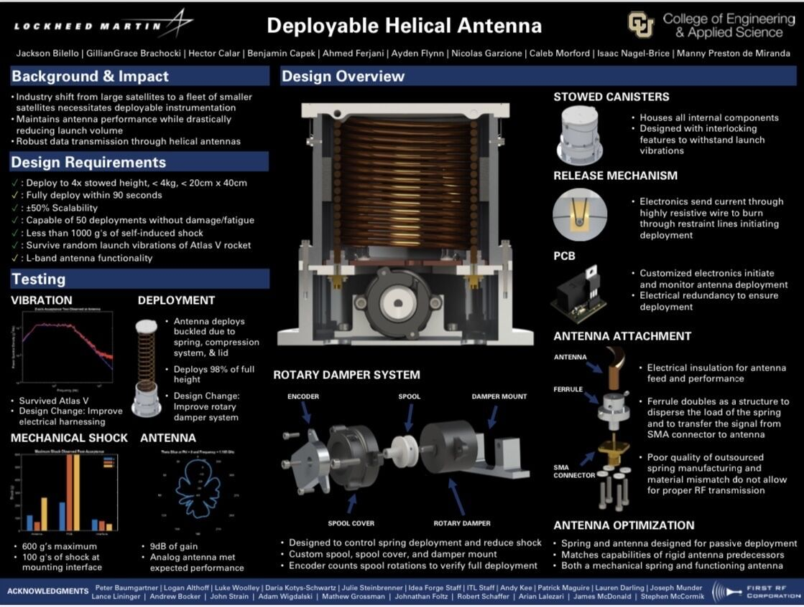

Self Deployed Helical Antenna Capstone Project

This capstone project showcases a self-deployed helical antenna design aimed at enhancing wireless communications by deploying from a compact state to a fully extended state. The antenna extends from 3.5 inches when compressed to nearly 20 inches upon deployment, providing improved functionality for small satellites.
The design leverages the properties of a mechanical spring to enable a controlled deployment triggered by an onboard computer. Sponsored by Lockheed Martin Space, this innovative approach meets the industry’s push toward compact yet powerful hardware solutions for the space sector.
← Back to ProjectsIn-Depth Coverage: A Revolutionary Approach to Compact Satellite Antennas
As the space industry shifts its focus from large satellites to smaller ones that pack the same functionality, the demand for compact onboard hardware is growing. A group of mechanical engineering seniors at the University of Colorado Boulder has responded to this need by designing a compactable antenna that enables more powerful radio communications on smaller satellites.
Sponsored by Lockheed Martin Space, the team from the Paul M. Rady Department of Mechanical Engineering set out to create a deployable helical antenna prototype for their Senior Design project. “Our whole team has a passion for the space industry, and we wanted to be a part of the change and innovation that is occurring,” explained project manager GillianGrace Brachoki. “We found the push for deployable items in smaller units really interesting.”
The prototype is designed to start in a compressed state. Traditional satellite antennas are fully deployed at launch, often resulting in bulky hardware. In contrast, this innovative design deploys its antenna component—extending four times its original height—once in space, triggered by an onboard computer.
CAD Engineer Isaac Nagel-Brice emphasized that “small satellites and micro-satellites lead to a nimbler industry,” allowing for quicker development cycles and lower costs. The design challenge was formidable; the students had to optimize the antenna's geometry, material properties, and frequency band while ensuring it could withstand the harsh conditions of an Atlas V launch.
Electromechanical Engineer Nicolas Garzione remarked, “Part of our requirements is that it has to survive the equivalent of an Atlas V launch, which is pretty violent.” The team also designed the antenna to be scalable, with every component able to adjust by plus or minus 50%, a critical feature for adapting to various radiofrequency needs.
The project has completed extensive testing—including functionality, deployment, and vibration tests—with radiofrequency testing performed by First RF and vibration tests by Lockheed Martin. According to Systems Engineer Hector Calar, “Shrinking the hardware down means the industry can add more advanced instrumentation, since you have more free space.”
Presented at the Engineering Projects Expo 2022, this innovative deployable antenna prototype marks a significant step forward in compact satellite technology, potentially revolutionizing how smaller satellites communicate and operate in space.
